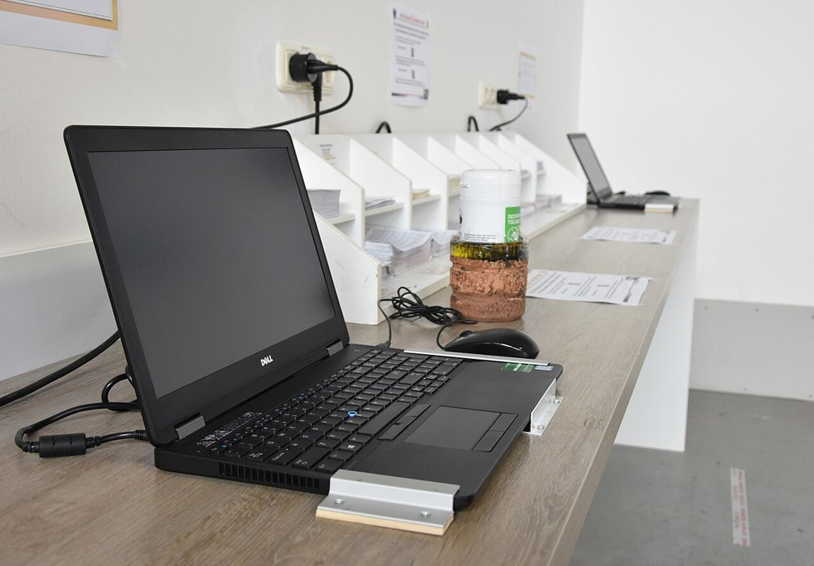

📷 사진 1 자리

▲ 노트북으로 온라인 서류를 신청하는 손 · 사진: U.S. Army USAGW by Emily Jennings / Public domain / 위키미디어 공용
보건소에서 받은 잠복결핵 검진 확인서를 떼려고 평일에 시간을 내 본 적이 있다면 반가운 변화예요. 11월 12일부터 정부24에서 질병 관련 서류 몇 가지를 바로 받을 수 있게 됐어요. 다만 검진을 어디서 받았느냐에 따라 온라인 발급이 안 되는 경우가 있어요.
온라인으로 되는 서류
질병관리청과 행정안전부가 정부24에 모은 서비스는 아래와 같아요.
| 서비스 | 내용 |
|---|---|
| 잠복결핵감염 검진 확인서 | 검사 이력 중 골라서 발급 |
| 잠복결핵감염 검진 결과서 | 과거·최근 결과 모두 |
| 감염병 신고내역 확인 | 25종, 신고일·신고기관 조회 |
| 희귀질환자 의료비 지원대상자 증명서 | 보건소 방문 없이 즉시 |
감염병 신고내역은 말라리아, 일본뇌염 등 25종부터 시작했고 담당 보건소까지 볼 수 있어요. 민감한 정보라서 본인 것만 조회돼요. 희귀질환자 의료비 지원 신청은 연말까지 정부24에 추가될 예정이에요.
내 검진도 될까
잠복결핵 서류는 2016년 2월 이후 국가나 지자체 사업으로 검진을 받고 그 이력이 등록된 사람만 온라인으로 받을 수 있어요. 보건소나 국가 사업으로 받은 검진이 여기에 해당해요.
개인적으로 민간 병원에 가서 받은 잠복결핵 검진은 아직 대상이 아니에요. 질병관리청은 단계적으로 넓힐 계획이라고 밝혔지만 시기는 정해지지 않았어요. 이 경우에는 검진받은 병원에서 서류를 받아야 해요.
신청 순서
1. 정부24에 접속해요.
2. 공동인증서, 금융인증서, 간편인증 가운데 하나로 본인인증을 해요.
3. '잠복결핵'이나 '감염병 신고내역'처럼 필요한 서류 이름으로 검색해 신청해요.
확인서는 검사 이력이 여러 건이면 원하는 회차를 고를 수 있어요. 결과서는 과거 결과와 가장 최근 결과를 모두 받을 수 있어서 제출처가 '최근 결과'를 요구하는지 먼저 확인하면 돼요.
질병관리청은 연간 약 15만 건의 질병 관련 민원에서 방문 불편이 줄 것으로 기대해요. 그런데 직장 제출용으로 잠복결핵 검진을 따로 받는 사람 중에는 민간 병원을 이용한 경우도 있어서, 그런 사람에게는 아직 달라진 게 없어요. 정부24에서 조회가 안 된다면 오류보다 검진 장소부터 떠올려 보는 게 빨라요.
희귀질환자 의료비 지원 신청이 정부24에 실제로 열리는 시점은 연말 질병관리청 공지로 확인할 수 있어요.
함께 보면 좋은 이슈